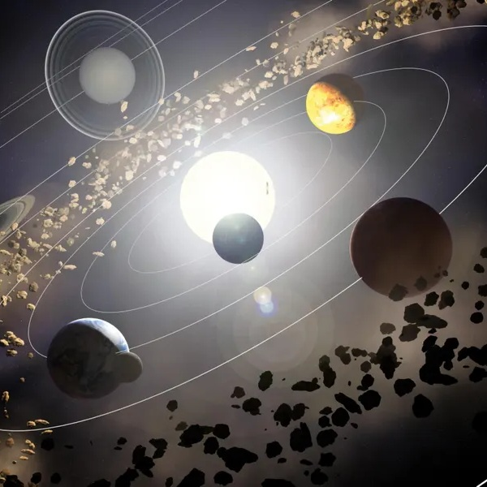
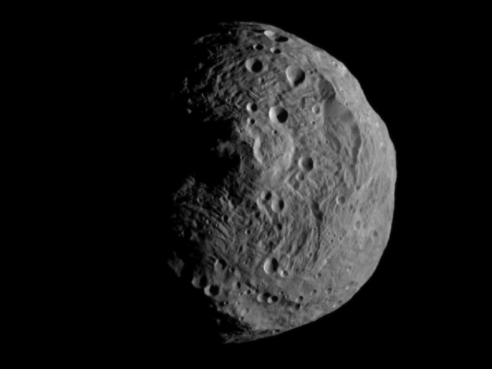
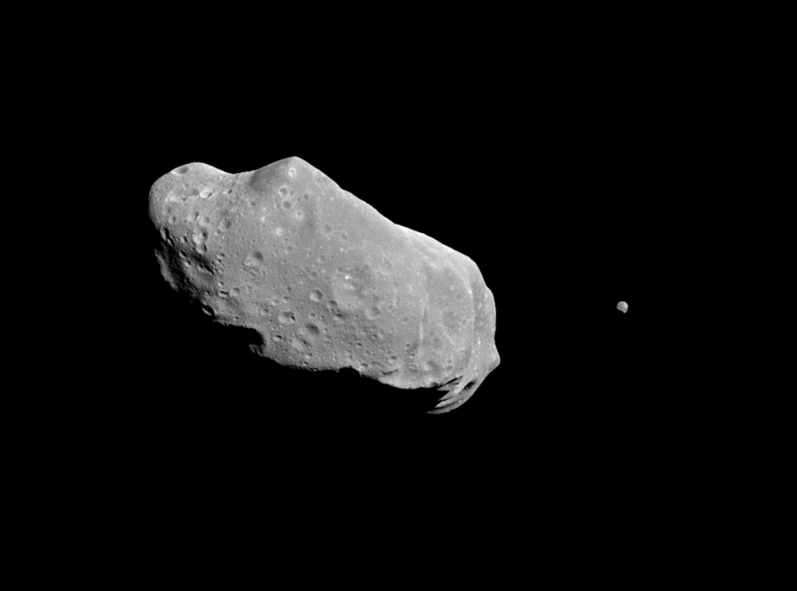
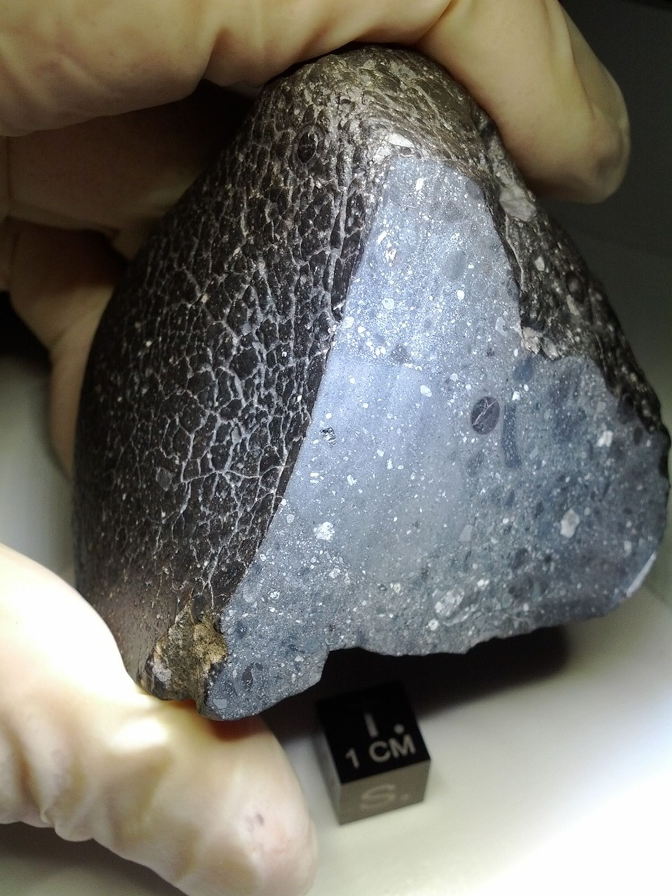

• Localisation : Entre Mars et Jupiter (2,2 à 3,2 unités astronomiques du Soleil)
• Nombre d'objets : Plus de 1 million d'astéroïdes de plus d'1 km de diamètre
• Masse totale : Environ 4% de la masse de la Lune
• Plus grand objet : Cérès (940 km de diamètre, classée comme planète naine)
• Autres grands objets : Vesta (525 km), Pallas (512 km), Hygiea (430 km)
• Composition : Principalement des roches et des métaux (fer, nickel)
• Âge : Formée il y a environ 4,6 milliards d'années
La ceinture d'astéroïdes est une région du système solaire située entre les orbites de Mars et Jupiter, contenant des millions de corps rocheux appelés astéroïdes ou planétoïdes. Ces objets varient en taille, allant de minuscules particules de poussière à des corps de plusieurs centaines de kilomètres de diamètre. Contrairement aux représentations populaires dans la science-fiction, les astéroïdes de la ceinture sont en réalité très espacés les uns des autres, avec des distances moyennes de centaines de milliers de kilomètres entre eux.
La ceinture d'astéroïdes est souvent considérée comme une "frontière" naturelle entre les planètes internes rocheuses (Mercure, Vénus, Terre, Mars) et les planètes externes gazeuses et glacées (Jupiter, Saturne, Uranus, Neptune).
Selon la théorie la plus acceptée, la ceinture d'astéroïdes est constituée de matériaux qui n'ont jamais pu former une planète en raison de l'influence gravitationnelle perturbatrice de Jupiter. Lors de la formation du système solaire, il y a environ 4,6 milliards d'années, la poussière et les roches dans cette région ont commencé à s'agglomérer, comme ailleurs dans le disque protoplanétaire, mais l'attraction gravitationnelle de Jupiter a empêché ces matériaux de se rassembler en un corps plus grand.
Au fil du temps, les collisions entre astéroïdes ont fragmenté de nombreux corps plus grands, créant une distribution de tailles que nous observons aujourd'hui. On estime que la ceinture d'astéroïdes actuelle ne contient qu'environ 0,1% de sa masse d'origine, la majeure partie ayant été éjectée du système solaire ou projetée vers les planètes intérieures pendant les premiers millions d'années de l'histoire du système solaire.
Les astéroïdes sont classés en différents types selon leur composition spectrale, qui reflète leur composition chimique :
• Type C (carbonés) : Les plus communs (75% des astéroïdes connus), très sombres avec une composition similaire au Soleil mais sans hydrogène, hélium et autres éléments volatils. Ils contiennent des composés carbonés et souvent de l'eau sous forme d'hydratation minérale.
• Type S (silicates) : Environ 17% des astéroïdes, composés principalement de silicates et de nickel-fer. Ils sont plus brillants que les astéroïdes de type C et dominent la partie interne de la ceinture.
• Type M (métalliques) : Composés principalement de nickel et de fer, ces astéroïdes sont probablement des fragments de noyaux métalliques de corps plus grands qui ont été brisés par des collisions.
• Autres types : Plusieurs autres classifications existent, comme les types P, D, E, etc., représentant des compositions plus rares ou des mélanges.
Parmi les millions d'astéroïdes, certains se distinguent par leur taille ou leurs caractéristiques particulières :
• Cérès : Le plus grand objet de la ceinture, classé comme planète naine depuis 2006. Avec un diamètre de 940 km, Cérès représente environ 25% de la masse totale de la ceinture d'astéroïdes.
• Vesta : Le deuxième plus grand astéroïde, avec un diamètre de 525 km. Vesta est unique car il possède une croûte, un manteau et un noyau différenciés, similaire aux planètes terrestres mais à une échelle beaucoup plus petite.
• Pallas : Le troisième plus grand astéroïde, avec un diamètre de 512 km et une orbite très inclinée par rapport au plan de l'écliptique.
• Hygiea : Le quatrième plus grand astéroïde, avec un diamètre d'environ 430 km, situé dans la partie externe de la ceinture principale.
• Famille Themis : Un groupe d'astéroïdes partageant des caractéristiques orbitales similaires, probablement issus de la fragmentation d'un corps parent plus grand suite à une collision.
Plusieurs missions spatiales ont étudié les astéroïdes de la ceinture principale :
• Galileo (1991-1993) : A survolé les astéroïdes Gaspra et Ida lors de son voyage vers Jupiter, découvrant que Ida possède une petite lune nommée Dactyl.
• NEAR Shoemaker (1997-2001) : A survolé l'astéroïde Mathilde avant d'étudier et d'atterrir sur l'astéroïde Éros (qui n'est pas dans la ceinture principale mais est un géocroiseur).
• Dawn (2011-2018) : La première mission à orbiter autour de deux corps extraterrestres, Vesta (2011-2012) et Cérès (2015-2018), fournissant des données détaillées sur ces deux plus grands astéroïdes.
• Hayabusa2 et OSIRIS-REx : Bien que ciblant des astéroïdes géocroiseurs (Ryugu et Bennu) plutôt que des objets de la ceinture principale, ces missions récentes ont démontré des techniques avancées d'étude et de prélèvement d'échantillons d'astéroïdes.
La ceinture d'astéroïdes est importante à plusieurs égards :
• Fenêtre sur le passé : Les astéroïdes sont considérés comme des "fossiles" du système solaire primitif, préservant des informations sur les conditions qui existaient lors de la formation des planètes.
• Ressources potentielles : Les astéroïdes contiennent des métaux précieux et des ressources qui pourraient être exploités dans le futur pour l'exploration spatiale ou même ramenés sur Terre.
• Risques d'impact : Bien que la plupart des astéroïdes restent confinés dans la ceinture, certains peuvent être perturbés et devenir des géocroiseurs, présentant un risque potentiel d'impact avec la Terre. L'étude de la ceinture d'astéroïdes aide à comprendre et à atténuer ces risques.
• Clés de la formation planétaire : L'étude de la ceinture nous aide à comprendre pourquoi une planète ne s'est pas formée dans cette région et comment Jupiter a influencé l'évolution du système solaire interne.

L'astéroïde Vesta, le deuxième plus grand de la ceinture, photographié par la sonde Dawn en 2011

L'astéroïde Ida et sa petite lune Dactyl, photographiés par la sonde Galileo en 1993

Une météorite trouvée sur Terre, fragment d'astéroïde ayant survécu à la traversée de l'atmosphère
Chez Cosmos Explorer, nous proposons plusieurs façons de découvrir et d'explorer la fascinante ceinture d'astéroïdes :
• Exposition "Pierres du Ciel" : Notre exposition permanente présente une collection de météorites authentiques provenant d'astéroïdes, avec des explications sur leur origine et leur composition.
• Simulation interactive : Notre modèle numérique de la ceinture d'astéroïdes vous permet de visualiser la distribution et le mouvement des astéroïdes, ainsi que de simuler des impacts et des perturbations gravitationnelles.
• Réalité virtuelle "Voyage entre les roches" : Enfilez un casque de réalité virtuelle et naviguez à travers la ceinture d'astéroïdes, en vous approchant des objets les plus intéressants pour les observer en détail.
• Conférences "Chasseurs d'astéroïdes" : Assistez à nos présentations sur la découverte et le suivi des astéroïdes, et apprenez comment les astronomes amateurs peuvent contribuer à ce domaine de recherche.
• Atelier "Impacts et extinctions" : Une activité éducative explorant le lien entre les astéroïdes, les impacts sur Terre et les extinctions massives dans l'histoire de notre planète.
Pour plus d'informations sur nos programmes d'exploration de la ceinture d'astéroïdes, consultez notre page d'exploration ou contactez-nous.